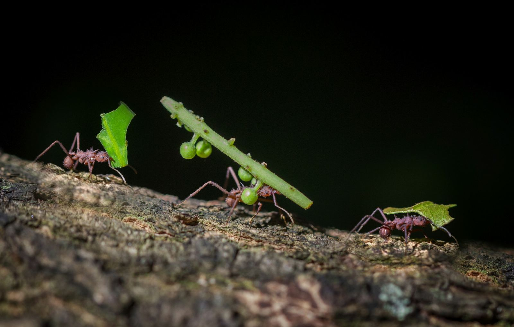

On cherche spontanément le cerveau. Qui décide de creuser ici plutôt que là ? Qui répartit les tâches ? Qui a choisi l'emplacement du nid ? La réponse, à chaque fois, est la même et elle est déstabilisante : personne.
La question du chef n'a pas de sens à l'échelle de l'individu. La décision existe bel et bien, et elle est souvent bonne. Elle n'est simplement localisée dans aucune tête.
La stigmergie : coordonner sans se parler
Le concept est dû à l'entomologiste français Pierre-Paul Grassé, en 1959. La stigmergie décrit une coordination qui ne passe pas par la communication directe, mais par les traces laissées dans l'environnement.
L'exemple canonique est la construction. Une ouvrière dépose une boulette de terre. Cette boulette modifie localement l'environnement. L'ouvrière suivante, en la rencontrant, est incitée à déposer la sienne au même endroit. Les dépôts s'amplifient, des piliers apparaissent, puis se rejoignent en arches et en voûtes, une architecture qu'aucun individu n'a jamais conçue dans son ensemble.
Le message n'est pas envoyé d'une fourmi à une autre. Il est déposé dans le monde, et le monde le transmet.
L'expérience des cadavres
La démonstration la plus frappante ne concerne pas la construction mais le rangement. Des chercheurs ont dispersé des milliers de fourmis mortes dans une fourmilière. Le lendemain, on observait de nombreux petits tas. Le surlendemain, un nombre réduit de tas plus grands.
Un tri collectif s'était opéré, sans chef d'orchestre, sans consigne, sans qu'aucune fourmi n'ait la moindre représentation du résultat visé. La règle individuelle est triviale (« je prends un cadavre isolé, je le dépose là où il y en a déjà ») et elle suffit à produire un classement.
Décider à plusieurs sans voter
Chez Temnothorax albipennis, une petite fourmi qui niche dans les anfractuosités rocheuses, le choix d'un nouveau nid suit un mécanisme de quorum sensing qui se déroule en deux temps.
- Phase 1, le tandem run. Une éclaireuse qui a trouvé un site prometteur revient chercher une congénère et la guide physiquement jusque-là, une seule à la fois. Lent, coûteux, mais fiable.
- Phase 2, le transport de masse. Dès qu'un certain nombre de fourmis est présent sur le site (le quorum), les recruteuses basculent : elles cessent de guider et se mettent à porter directement leurs congénères.
Ce seuil est le cœur du dispositif. Il permet à la colonie de choisir le meilleur site même si très peu de fourmis ont comparé les options entre elles. Le déménagement massif ne se déclenche que si assez d'individus actifs ont déjà validé l'endroit indépendamment.
Le groupe est plus rationnel que ses membres
Le résultat collectif dépasse l'individu au sens strict : les colonies résistent à des effets de leurre, biais de décision classiques, qui piègent les fourmis isolées. La rationalité est une propriété du protocole, pas des fourmis.
Répartir le travail sans organigramme
Il n'existe aucun petit chef qui assigne les tâches. Le modèle du seuil de réponse l'explique entièrement : chaque individu réagit différemment à un même stimulus. Les fourmis à seuil bas s'activent dès que le besoin est faible ; celles à seuil haut n'interviennent que lorsqu'il devient criant.
Deborah Gordon, à Stanford, a montré que la probabilité qu'une fourmi effectue une tâche donnée dépend de l'historique récent de ses brefs contacts antennaires avec d'autres ouvrières. Les fourmis ne se donnent jamais d'ordres : c'est le rythme et le motif de leurs rencontres qui module ce que chacune va faire.
La conséquence est spectaculaire. Face à une perturbation, une colonie réajuste son allocation de tâches et maintient ses fonctions, même quand on retire artificiellement une part importante des ouvrières spécialisées. Sans contrôle central, et sans qu'aucune n'évalue la situation globale. Le système est antifragile par construction.
Le langage chimique et l'identité de colonie
La communication passe presque exclusivement par des molécules. On distingue plusieurs canaux : les phéromones de piste, dont l'effet de recrutement dure de vingt minutes à plusieurs jours selon les espèces et les glandes concernées ; et les phéromones d'alarme, quasi universelles, qui combinent souvent alerte et recrutement, vers la source du danger, ou loin d'elle.
Mais le point le plus intéressant concerne l'identité. Une colonie n'a pas de visage : elle a une odeur. Le profil d'hydrocarbures cutanés de chaque fourmi constitue une signature chimique propre à sa colonie, ce qui permet de distinguer instantanément un membre du groupe d'un étranger.
Selon le « modèle Gestalt », les fourmis échangent en permanence ces hydrocarbures entre elles. L'odeur commune s'homogénéise par contact, en continu.
L'identité du superorganisme n'est stockée nulle part. Elle est distribuée, et sans cesse renégociée, comme un système immunitaire qui redéfinirait en permanence le « soi ».
La contrepartie est brutale : si l'on modifie chimiquement l'odeur d'une fourmi, ses propres sœurs l'attaquent et la tuent immédiatement, par réflexe. Il n'y a pas de reconnaissance personnelle à laquelle faire appel.
Trouver le plus court chemin sans carte
L'expérience du « double pont », menée par Jean-Louis Deneubourg en 1990, est devenue un classique. Une colonie de fourmis d'Argentine est reliée à une source de nourriture par deux ponts, l'un plus court que l'autre. Systématiquement, la colonie finit par converger vers le plus court.
Le mécanisme est une pure rétroaction positive. Les fourmis qui empruntent la branche courte reviennent plus vite au nid, donc y repassent plus souvent, donc renforcent plus rapidement la piste de phéromone. Les suivantes suivent préférentiellement la piste la plus marquée, ce qui la renforce encore. Aucune fourmi n'a mesuré quoi que ce soit.
Ce principe a directement inspiré l'algorithme Ant Colony Optimization, aujourd'hui utilisé en informatique pour le routage réseau et le problème du voyageur de commerce.
Mais l'optimum n'est pas toujours optimal
Des travaux récents ont mis en évidence un paradoxe de Braess chez les fourmis : le chemin le plus court n'est pas nécessairement le plus rapide une fois le trafic bidirectionnel pris en compte, un phénomène bien connu des ingénieurs du trafic routier humain. Le superorganisme peut fabriquer ses propres embouteillages.
Un cerveau sans cerveau
Deborah Gordon résume l'idée ainsi : un cerveau, ou une colonie, traite de l'information sur son environnement et sur son propre état, puis produit un comportement adapté aux conditions. On peut appeler ça cognitif, même si ce n'est pas appliqué à un individu mais à un collectif.
La ressemblance structurelle est précise : de même qu'aucun neurone ne dicte sa conduite aux autres, aucune fourmi n'en dirige une autre. Une étude de 2022 le montre empiriquement : quand une colonie doit évacuer son nid face à une hausse de température, la décision collective dépend à la fois de l'ampleur du changement et de la taille du groupe, un comportement qui ressemble à celui des réseaux de neurones artificiels.
Un esprit peut exister sans qu'aucune de ses parties ne soit intelligente. L'intelligence est une propriété du réseau, pas de ses nœuds.
C'est ce qui rend la colonie impossible à interroger. Il n'y a personne à qui poser la question : la réponse n'existe qu'à l'échelle du tout.

Sources et pistes
- Pierre-Paul Grassé, 1959 · formulation initiale de la stigmergie.
- Deborah M. Gordon, Ant Encounters: Interaction Networks and Colony Behavior, Princeton University Press, 2010.
- Jean-Louis Deneubourg et al., 1990 · expérience du double pont.
- Bonabeau, Theraulaz & Deneubourg · modèle du seuil de réponse.
- Travaux sur le quorum sensing chez Temnothorax albipennis (Annual Review of Entomology).
- Recherches sur les hydrocarbures cutanés et le modèle Gestalt de l'odeur de colonie.
- Étude de l'université Rockefeller, 2022 · décisions collectives et réseaux de neurones.